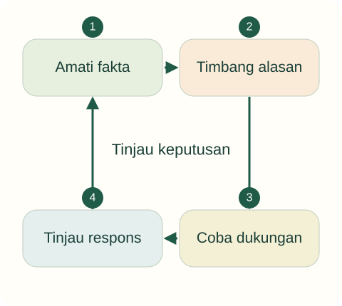
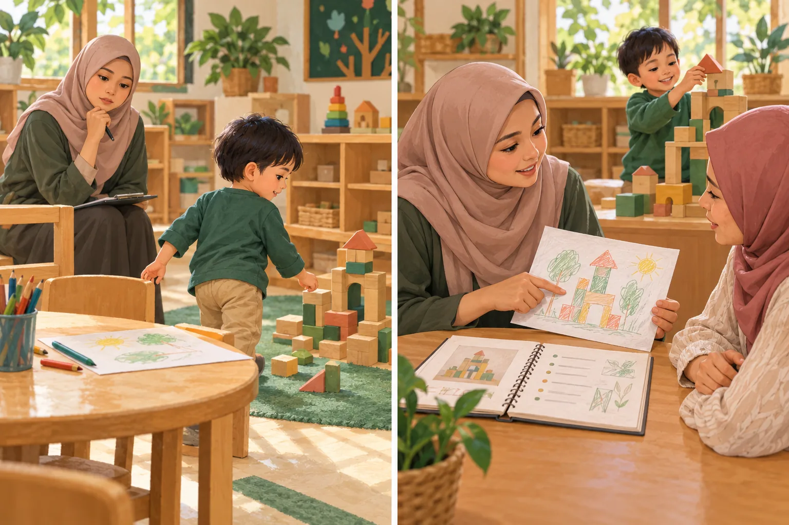

Tujuan pembelajaran
- Menjelaskan tanggung jawab dan batas kompetensi pendidik
- Menganalisis fakta, interpretasi, dan informasi yang kurang
- Menetapkan tindakan, bukti, dan waktu peninjauan
Profesionalisme sebagai pertanggungjawaban
UU No. 14 Tahun 2005 menempatkan guru pada PAUD jalur formal, pendidikan dasar, dan pendidikan menengah serta memuat kompetensi pedagogik, kepribadian, sosial, dan profesional. Kompetensi tersebut terlihat saat guru merancang pengalaman belajar, berkomunikasi dengan keluarga, memakai pengetahuan yang relevan, dan menjaga martabat anak. Tindakan profesional dapat ditinjau dari alasan, pelaksanaan, bukti, dan tindak lanjutnya.
Merumuskan persoalan yang bisa ditangani
Mulai dari pengamatan. Kapan anak meninggalkan meja, apa tuntutan kegiatannya, apa yang dilakukan sebelum dan sesudahnya, serta kapan ia tetap bertahan? Catatan “meninggalkan meja setelah mencoba menyalin dua huruf” berbeda dari dugaan “malas menulis”. Hubungi keluarga untuk mengetahui apa yang biasa dilakukan anak di rumah. Guru dapat mempertimbangkan durasi, tuntutan gerak, bahan, pemahaman instruksi, dan minat sebelum memilih langkah awal.
Menimbang dan menguji respons
Bandingkan respons yang mungkin. Guru dapat mempersingkat tugas, menyediakan alat yang mudah digunakan, atau memasukkan simbol dan coretan bermakna pada permainan. Jika memilih kartu nama bangunan, tentukan tujuan yang dipertahankan, misalnya menggunakan tanda untuk menyampaikan makna. Catat apakah anak mulai membuat atau menjelaskan tanda dengan dukungan yang realistis. Ketika informasi memerlukan kompetensi pihak lain, guru mengoordinasikan konsultasi sesuai prosedur satuan.
Refleksi selama dan setelah tindakan
Schön (1983) membahas bagaimana praktisi dapat memikirkan dan menyesuaikan tindakan ketika menghadapi situasi yang sedang berlangsung. Guru dapat mengubah bantuan saat melihat anak tertahan pada instruksi, lalu meninjau catatan setelah kegiatan. Bila anak dapat memberi makna pada tanda di permainan, guru memperoleh petunjuk untuk merancang kesempatan berikutnya. Refleksi juga menuntut guru memeriksa keputusan awalnya sendiri dan menjelaskan dasar perubahan kepada keluarga.
Diagram konsep

Bagaimana guru bertindak ketika keluarga, lembaga, dan anak memerlukan hal yang berbeda?

Seorang anak beberapa kali meninggalkan meja pada kegiatan menulis, tetapi bertahan lama saat membangun dengan balok. Keluarga meminta hukuman agar ia terbiasa. Kepala RA meminta guru menyiapkan laporan dan langkah tindak lanjut.
- Pada kegiatan mana anak bertahan?
- Siapa yang ikut meninjau informasi tentang anak?
Pembahasan kasus
Tentukan satu dukungan awal, misalnya membuat tanda untuk bangunan yang dipilih anak. Catat pilihan, bantuan, dan cara anak menggunakan tanda. Sepakati dengan keluarga kapan guru akan meninjau respons dan apa yang perlu didiskusikan kembali.
Buka contoh penalaran setelah mencoba
Ubah label “malas menulis” menjadi catatan yang dapat digunakan guru.
Catat bahwa anak meninggalkan meja setelah menyalin dua huruf, lalu terlibat menyusun balok dan menjelaskan bangunannya.
Latihan terbimbing
Susun enam bagian memo: fakta, masalah, konsep dan aturan, dua pilihan, keputusan, peninjauan. Tulis satu data yang masih kurang pada bagian fakta.
Latihan mandiri
Tulis memo keputusan 400–600 kata. Gunakan minimal dua sumber sesuai fungsi, jelaskan dua alternatif, dan tetapkan bukti, waktu peninjauan, serta pihak yang terlibat.
Lihat pembahasan
mencatat konteks, mencoba dukungan yang sesuai, dan menetapkan kapan respons ditinjau
Pengamatan, tindakan awal, dan waktu peninjauan membuat keputusan dapat diperiksa kembali.
Refleksi calon pendidik
Bagian mana dari kesimpulan saya yang akan berubah jika keluarga memberi informasi baru?
Catatan hanya disimpan di peramban ini. Tidak dikirim kepada dosen.
Referensi dan bacaan pendamping
- Republik Indonesia. (2005). Undang-Undang Nomor 14 Tahun 2005 tentang Guru dan Dosen.Pasal 1 angka 1 dan Pasal 10 ayat (1), termasuk lingkup guru pada PAUD jalur formal.
- Schön, D. A. (1983). The reflective practitioner: How professionals think in action. Basic Books.Bacaan teoretis tentang refleksi praktisi ketika menghadapi situasi yang sedang berlangsung.
- Republik Indonesia. (2014). Undang-Undang Nomor 35 Tahun 2014 tentang Perubahan atas Undang-Undang Nomor 23 Tahun 2002 tentang Perlindungan Anak.Dibaca bersama UU dasar dan perubahan berikutnya, termasuk UU 17/2016. Materi ini berfokus pada hak anak, bukan penetapan sanksi pidana.
- National Association for the Education of Young Children. (2020). Developmentally appropriate practice: A position statement.Kerangka profesi berbasis riset, bukan regulasi Indonesia. Pertimbangkan pola perkembangan, individualitas, dan konteks. Ringkasan konsep tidak menggantikan dokumen asli.
- Kementerian Pendidikan, Kebudayaan, Riset, dan Teknologi. (2022). Peraturan Menteri Pendidikan, Kebudayaan, Riset, dan Teknologi Nomor 21 Tahun 2022 tentang Standar Penilaian Pendidikan pada Pendidikan Anak Usia Dini, Jenjang Pendidikan Dasar, dan Jenjang Pendidikan Menengah.Rujukan penilaian yang ditemukan dalam penelusuran. Ketentuan penilaian dalam Permendikbud 137/2014 telah dicabut melalui peraturan ini.